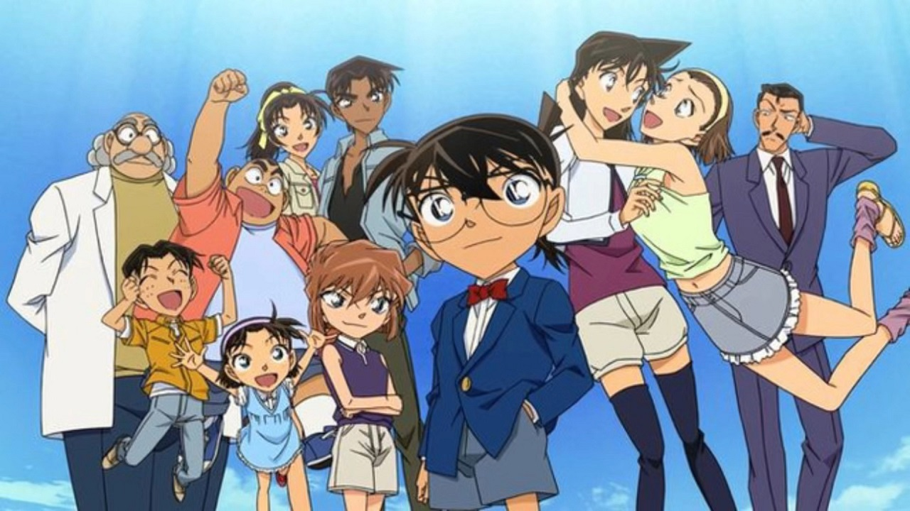
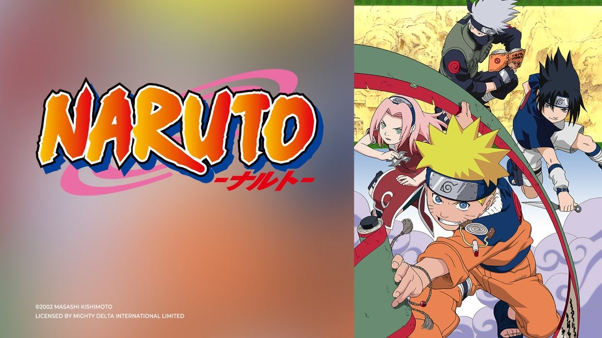
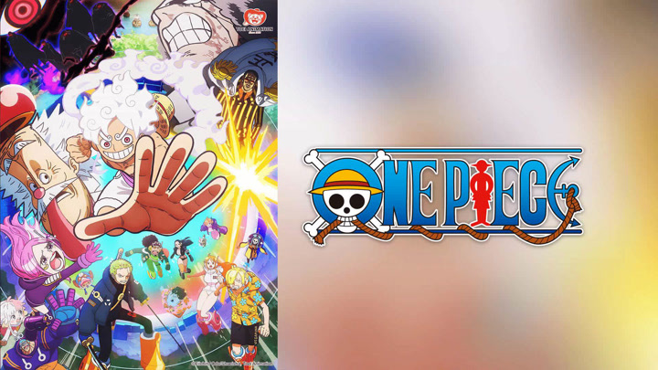

DETECTIVE CONAN

CONTENT
Detective Conan revolves around the genius high school detective Kudo Shinichi.
While being treated at the mysterious Black Organization, he is forced to drink the poison APTX 4869
which causes his body to shrink.
Hidden beneath his youthful appearance, Conan secretly devises a plan and seeks to take down the organization to regain his former self.
NARUTO

CONTENT
Naruto is the story of Uzumaki Naruto, an orphan boy ostracized by the Hidden Leaf Village (Konoha) for possessing the Nine-Tailed Fox seal.
Dreaming of becoming the great Hokage
he and his companions embark on a arduous journey of training, fighting against evil organizations, and bringing peace to the ninja world.
The plot development is divided into two main parts:
-Teenage Years (Naruto)
-Naruto Shippuden (Shippūden)
ONE PIECE

CONTENT
The story of One Piece follows Monkey D. Luffy and the Straw Hat crew as they adventure through the Grand Line in search of the legendary treasure
"One Piece." Along the way, they confront other pirate crews and the World Government to realize their dream of becoming the Pirate King.